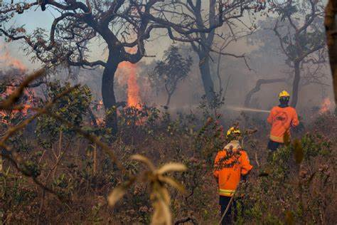
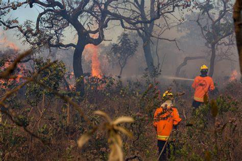

Imagine our Connected Earth
 


Principais causas dos incêndios florestais
As principais causas dos incêndios florestais são as descargas elétricas (raios) que caem na vegetação e assim o fogo se propaga. Quanto o ambiente atingido está muito seco, o fogo pode se espalhar mais rápido e ficar fora de controle, formando um incêndio florestal. Entretanto, em algumas situações atmosféricas muito específicas, os raios vêm acompanhados de chuvas e tempestades, que ajudam no controle do incêndio florestal.
Em ocasiões como atividade vulcânica e ondas de calor intensas, junto com a ausência de chuvas e ao ressecamento tanto do solo quanto da vegetação, podem dar origem a fagulhas que iniciam incêndios florestais. Além disso, o ser humano é o principal causador desse tipo de desastre ambiental.
Causas antrópicas dos incêndios florestais
As atividades do ser humano são as principais causadoras de incêndios florestais. Essas atividades podem ser voluntárias, que são os atos onde o indivíduo e está consciente dos seus atos e os provoca por conta própria, mas quando são involuntárias, fruto de ações inconscientes que pode induzir o aparecimento de vários focos de incêndio que acabam ficando fora do controle. Na maioria das vezes, os atos voluntários estão associados a práticas sobre a economia, como a abertura de áreas de plantio e pastagem ou a produção de carvão vegetal.
Entre as causas antrópicas dos incêndios florestais podemos citar:
- Descarte irregular de cigarro ainda acesos, que podem iniciar o fogo e consequentemente iniciar um incêndio quando entra em contato com o solo ou a vegetação;
- Fagulhas oriundas de locomotivas, carros ou máquinas agrícolas;
- Fogo não controlado colocado em lixos ou objetos descartados no mato;
- Perda de controle no uso do fogo durante as queimadas para limpar os terrenos, principalmente durante a abertura dos pastos, de áreas agrícolas ou de áreas de construção;
- Fogueiras feitas em acampamentos construídas de forma inadequada ou que não foram apagadas.
- Fogo iniciado de propósito por pessoas que tinham como objetivo provocar um incêndio.
Impacto Ambiental dos Incêndios
Os incêndios florestais representam uma das ameaças mais graves ao meio ambiente e à fauna, especialmente durante os períodos de seca. Essas queimadas têm repercussões amplas e profundas que vão além da destruição instantânea, afetando ecossistemas inteiros e colocando em risco a sobrevivência de várias espécies. Para diminuir esses impactos, é fundamental hospedar cuidados específicos durante os períodos de seca.
Prevenção de Incêndios Florestais
Incêndios florestais representam uma ameaça constante para ecossistemas frágeis e comunidades em todo o mundo. Para evitar catástrofes que resultam em perdas irreparáveis de biodiversidade, danos econômicos e até vidas humanas, é crucial adotar medidas preventivas. Vamos explorar algumas estratégias fundamentais para reduzir o risco e impacto desses incêndios devastadores.
Incêndios florestais apresentam uma ameaça constante para ecossistemas frágeis e comunidades em todo o mundo. Para evitar esses incêndios que resultam em perdas irreparáveis de biodiversidade, danos econômicos e até vidas humanas, é crucial hospedar medidas de prevenção.
Vamos analisar algumas estratégias fundamentais para reduzir o risco e impacto desses incêndios.
1. Extinção Responsável de Fogueiras e Fontes de Calor:
Ao visualizar uma fogueira, lembre-se: a água ou a terra são aliados que não podemos dispensar. Garanta que o fogo esteja completamente extinto e sem risco de se reacender. Evitar acender fogueiras em áreas frágeis são práticas que evitam o surgimento de incêndios sem controle.
2. Criação de Aceiros: Barreiras Naturais de Proteção
A construção de aceiros, que são faixas de terra sem vegetação inflamável, é uma estratégia crucial para evitar a propagação de incêndios. Esses corredores livres de plantas atuam como uma barreira, impedindo que o fogo avance descontroladamente. Ao manter essas áreas sem material inflamável, a chance de um incêndio se espalhar rapidamente é drasticamente reduzida.faixas livres de biomassa combustível, reduz-se significativamente o potencial destrutivo dos incêndios.
3. Manuseio Seguro de Fósforos e Isqueiros
Para evitar incêndios acidentais, é essencial manter fósforos e isqueiros fora do alcance de crianças. Além disso, educar as pessoas, especialmente os jovens, sobre o uso seguro e responsável desses objetos pode prevenir muitas ignições inesperadas. Pequenas ações, como armazenar fósforos em locais seguros, podem fazer uma grande diferença na prevenção de desastres.
4. Preparação Cuidadosa de Fogueiras e Uso de Velas
Antes de acender uma fogueira ou utilizar velas ao ar livre, é vital limpar a área ao redor, removendo mato seco ou outros materiais inflamáveis. Essa simples prática ajuda a prevenir que faíscas iniciem um incêndio. Preparar o espaço com cuidado garante que essas atividades recreativas possam ser realizadas de forma segura e controlada.
Ações recomendadas caso um incêndio
Residências próximas à floresta:
Limpe o entorno da casa.
Faça barreiras corta-fogo.
Armazene combustíveis em locais seguros.
Mantenha fósforos longe de crianças.
Tenha meios para apagar fogo.
Planeje evacuação familiar.
Na floresta:
Não jogue cigarros/fósforos no chão.
Não fume ou faça fogueiras em risco elevado.
Fogueiras: use locais próprios, apague bem.
Queimadas:
Proibidas em risco elevado (jul-set).
Avise vizinhos e autoridades.
Ações perto de incêndio:
Ligue 112/117.
Siga as autoridades.
Não bloqueie bombeiros.
Incêndio perto da casa:
Avise vizinhos, corte gás, molhe a casa.
Prepare-se para evacuar.
Se cercado:
Fuja contra o vento, busque água.
Cubra-se com roupas molhadas, respire perto do chão.
Mudanças Climáticas e o Aumento de Incêndios
Sim, as mudanças climáticas são um dos principais fatores que impulsionam o aumento dos incêndios florestais:
Ondas de calor: As ondas de calor extremo são agora cinco vezes mais frequentes do que há 150 anos.
Secas: A redução das chuvas, associada às mudanças climáticas, intensifica as condições das secas, favorecendo os incêndios.
Baixa umidade do ar: O ar seco aumenta a vulnerabilidade das áreas florestais à propagação do fogo.
Mapas em tempo Real de incêndios
O site Nasa worldview é um mapa disponibilizado pela nasa para ter um monitoramento em tempo real dos focos de incêndios pelo mundo